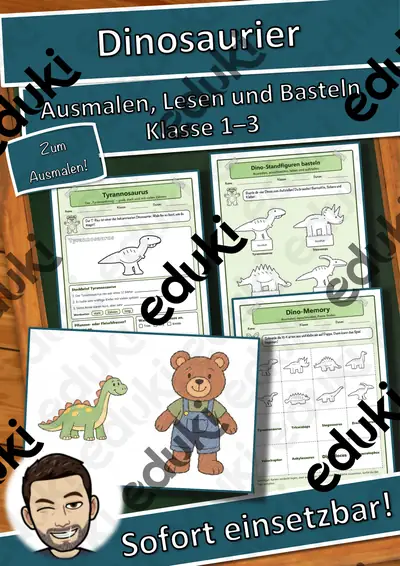
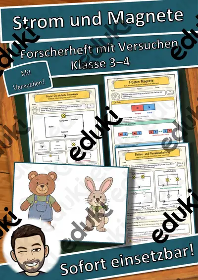
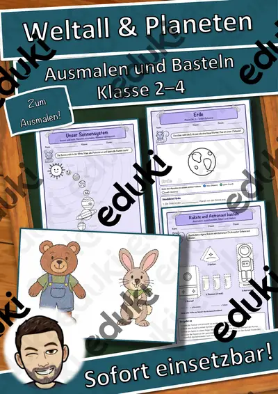
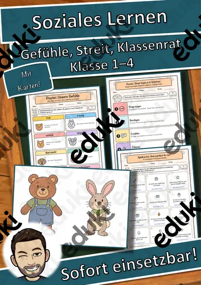
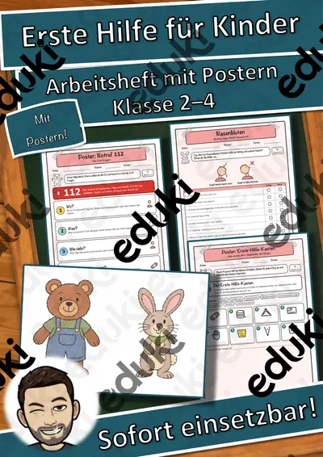

Materialpaket Winter-Lesespaziergänge für Klasse 2–4: 5 Lesespaziergänge mit Rätseln, 3-fach differenziert (Winterwald, Spuren im Schnee, Plätzchen & mehr)
5 Lesespaziergängen für die Klassen 2 bis 4 – im Paket günstiger als einzeln
Mit diesem Materialpaket bekommst du 5 meiner Lesespaziergänge rund um den Winter – Tiere im Winterwald, Spuren im Schnee, Tiere in Eis und Wüste, Obst und Gemüse im Winter und Plätzchenbacken im Advent in einem Download. Die Kinder lesen kurze Texte, laufen durch den Raum, suchen die passende Bildkarte und sammeln Buchstaben für ein Lösungswort. Jeder Lesespaziergang ist dreifach differenziert (★ / ★★ / ★★★) mit eigenem Lösungsblatt je Stufe.
Preisvorteil: Einzeln gekauft kosten die 5 Materialien regulär zusammen 19,95 €. Im Paket zahlst du nur 13,49 € und sparst damit rund 32 %.Die 5 Materialien im Paket
Tiere im Winterwald (Klasse 2–4): Bei diesem Lesespaziergang lesen die Kinder kurze Texte über zehn heimische Tiere im Winter und suchen im Raum die passende Bildkarte.
Spuren im Schnee (Klasse 2–4): Dabei erfahren die Kinder, woran man die Abdrücke von Pfoten, Hufen und Vogelfüßen im Schnee unterscheidet.
Tiere in Eis und Wüste (Klasse 2–4): Nebenbei lernen die Kinder, wie Fell, Fettschicht, Höcker oder ein Bau im Sand den Tieren in großer Kälte und großer Hitze helfen und warum Eisbär und Pinguin sich nie treffen.
Obst und Gemüse im Winter (Klasse 2–4): Nebenbei lernen die Kinder, welches Obst und Gemüse im Winter bei uns wächst, was man lagern kann, was von weit her kommt und warum Vitamine wichtig sind.
Plätzchen backen im Advent (Klasse 2–4): Nebenbei lernen die Kinder, woher Mehl, Zucker, Butter, Mandeln und Zimt kommen, wozu man Waage, Nudelholz und Ausstechform braucht und was beim Backen für Sauberkeit und Sicherheit wichtig ist.
Lehrplanbezug (LehrplanPLUS Bayern, Grundschule, Jahrgangsstufe 2 bis 4)Deutsch – Lesen, mit Texten und weiteren Medien umgehen: Die Kinder lesen kurze Sachtexte auf drei Niveaus, entnehmen Informationen und ordnen sie Bildkarten zu – mit Selbstkontrolle über das Lösungswort.
Deutsch – Sprechen und Zuhören / DaZ: Wortschatzarbeit zu Wintertieren, Spuren und Lebensmitteln; Satzmuster und Gesprächsimpulse unterstützen auch Kinder mit Deutsch als Zweitsprache.
Bewegtes Lernen: Der Lesespaziergang verbindet Lesen mit Bewegung im Raum und eignet sich für Stationen und Lernzirkel.
Heimat- und Sachunterricht: Tiere im Winterwald, Spuren im Schnee, Tiere in Eis und Wüste, Obst und Gemüse im Winter, Plätzchen backen im Advent
Das ist in jedem Lesespaziergang enthalten
Lehrerinformation mit Ablauf, Startgruppen, Differenzierung, Sachinformation und Stundenverlauf10 farbige Bildkarten (A4) mit eigenen Illustrationen
Lesetexte in 3 Stufen (★/★★/★★★)Laufzettel und Lösungsblätter je Stufe
Urkunde zum Abschluss
Einsatzmöglichkeiten
Alle Materialien passen von Dezember bis Februar, auch als Thema der Woche, Werkstatt oder für die Adventszeit. Du kannst sie im Stationenlernen, in Freiarbeit und Wochenplan, in der Leseförderung und in Förderstunden einsetzen. In Vertretungsstunden funktionieren sie ohne Vorbereitung. Sie eignen sich für alle Schulen in allen Bundesländern.
Viel Freude mit deiner Klasse wünscht dir Snice!
Ähnliche Materialien

Dinosaurier zum Ausmalen, Lesen und Basteln – Kl. 1–3

Strom und Magnete – Forscherheft mit Versuchen, Postern und Stromkreis-Werkstatt Kl. 3–4

Weltall & Planeten zum Ausmalen und Basteln – Sonnensystem Kl. 2–4

Soziales Lernen – Gefühle, Streit lösen, Klassenrat: Heft mit Postern und Karten Kl. 1–4

Erste Hilfe für Kinder – Arbeitsheft mit Postern, Notruf & Wunden Kl. 2–4

Persönlichkeiten-Werkstatt: Helen Keller Steckbrief

Persönlichkeiten-Werkstatt: Rosa Parks – Steckbrief zum Lesen und Ausfüllen, Klasse 3–4 (kostenlos)